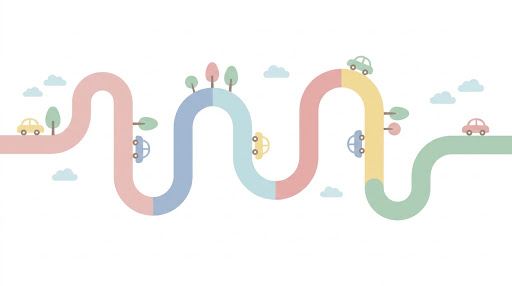
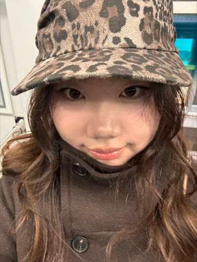
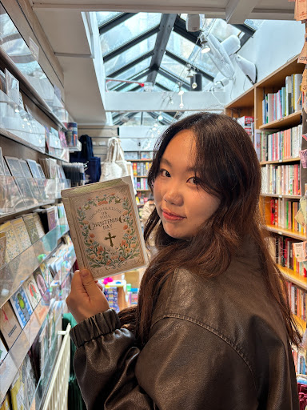

正式做个自我介绍
我们是目前中国最大的
Mentorship Platform！
🎓



探索我们建设这个平台的最终奥义
想快速成长，最好的捷径就是“偷师”！
人生的路从来不止一条，成功这事也没有标准答案！看看别人是怎么做到的，直接去和有经验的人聊聊。
关于【性价比】
我们从花了大钱找终结的同学口中得知：整个申请里最管用、最值得的，其实就是中介为他们匹配到的梦校学长学姐。
凭什么这么好的经验只能被少数人垄断？我们就是要打破这个壁垒！我们的目的就是让你窃取到和几十万中介一模一样的核心收获。 让信息流动起来，让大家都拥有同样的起跑线。

一见如故的全球利他朋友圈
我们想为所有热爱分享、愿意搭一把手的人，搭一个真正纯粹的平台。
在这里，你聊的可不是身边的老面孔，而是来自全球各地的同行者。想知道未来目的地的真实生活和学业到底啥样？直接在这儿找个当地的 Mentor 聊一场就行！
大家都是带着“想帮帮别人”的坦诚心态而来，所以根本不需要套路，一开麦就一见如故，直接成朋友。在这个圈子里， Mentor 之间也在互相学习、一起向前走。
看看背后运行的创始人们吧
Greetings from our founders！
Jessie Dong
Yale University · head of platform
"I spent years decoding the Ivy League admissions process. My mission is to ensure that no student's potential is lost in translation. I believe every transcript deserves a soul."

Emma Zhou
Imperial College London · co-founder
Name
Emma Zhou
Department
Founder
Role
Intern
Institution
Imperial College London
LUMINA SOFT SYS

MY STORY:
我常说自己是“小点子学家”。
1111
Stanford GSB · CEO
"Silicon Valley taught me how to scale technology, but mentorship taught me how to scale human potential. I'm here to ensure every student finds their 'Yes'."